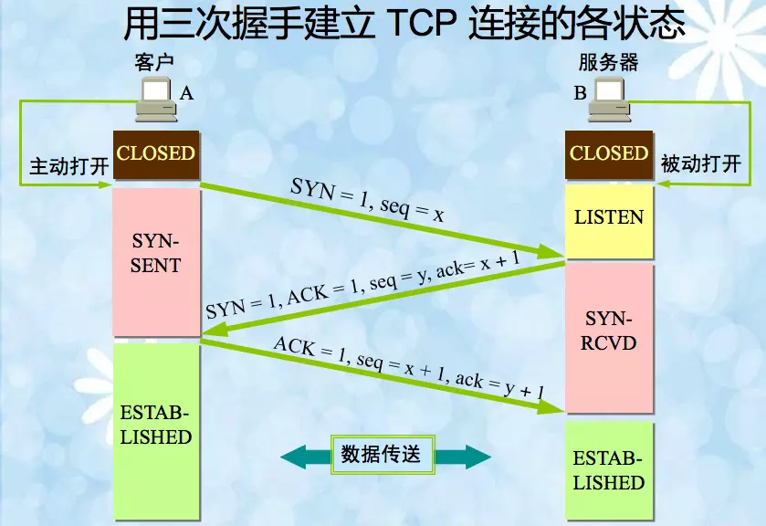
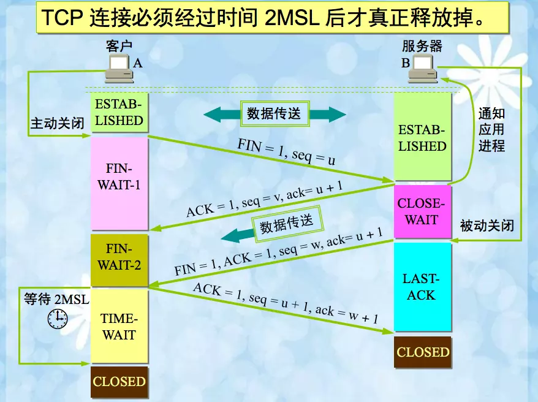
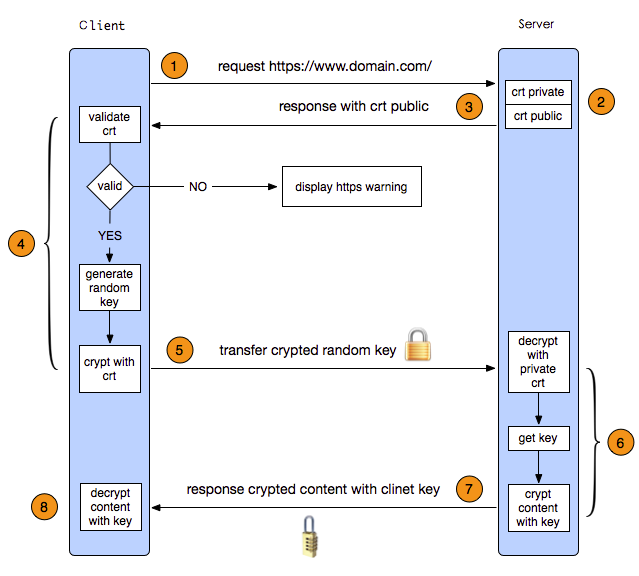

<!DOCTYPE html>
<html lang="zh-CN">
<head><meta name="generator" content="Hexo 3.9.0">
  <meta charset="utf-8">
  <meta content="width=device-width, initial-scale=1.0, maximum-scale=1.0, user-scalable=0" name="viewport">
  
  <title itemprop="name">后台面试题目总结 | Lu&#39;s Blog</title>
  
    <link rel="shortcut icon" href="/images/favicon.ico">
  
  <meta http-equiv="x-dns-prefetch-control" content="on">
  <link rel="stylesheet" href="https://fonts.googleapis.com/css?family=Noto+SerifMerriweather|Merriweather+Sans|Source+Code+Pro|Ubuntu:400,700|Noto+Serif+SC" media="all">
  <link rel="dns-prefetch" href="//cdn.jsdelivr.net">
  <link rel="stylesheet" id="saukra_css-css" href="/css/style.css" type="text/css" media="all">
  <link rel="stylesheet" href="/css/lib.min.css" media="all">
  <link rel="stylesheet" href="/css/font.css" media="all">
  <link rel="stylesheet" href="/css/insight.css" media="all">
  <link rel="stylesheet" href="/css/jquery.fancybox.min.css" media="all">
  <link rel="stylesheet" href="/css/zoom.css" media="all">
  <link rel="stylesheet" type="text/css" href="/css/sharejs.css">
<!--   <link rel="stylesheet" id="saukra_css-css" href="https://2heng.xin/wp-content/cache/autoptimize/css/autoptimize_ad42a61f4c7d4bdd9f91afcff6b5dda5.css
" type="text/css" media="all"> -->
  <script>
  /*Initial Variables*/
  var mashiro_option = new Object();
  var mashiro_global = new Object();
  mashiro_option.NProgressON = true;
  /* 
   * 邮箱信息之类的东西可以填在这里，这些js变量基本都作用于sakura-app.js
   * 这样的设置仅是为了方便在基于PHP开发的主题中设置js变量，既然移植到了Node上，我想或许可以精简这一逻辑吧
   */
  mashiro_option.email_domain = "";
  mashiro_option.email_name = "";
  mashiro_option.cookie_version_control = "";
  mashiro_option.qzone_autocomplete = false;
  mashiro_option.site_name = "Lu'sBlog";
  mashiro_option.author_name = "Blog";
  mashiro_option.site_url = "";
  mashiro_option.v_appId = "GyC3NzMvd0hT9Yyd2hYIC0MN-gzGzoHsz";
  mashiro_option.v_appKey = "mgOpfzbkHYqU92CV4IDlAUHQ";
  mashiro_option.mathjax = "0";
  mashiro_option.qq_api_url = "https://api.mashiro.top/qqinfo/"; 
  mashiro_option.qq_avatar_api_url = "https://api.mashiro.top/qqinfo/";

  // mashiro_option.jsdelivr_css_src = "https://cdn.jsdelivr.net/gh/moezx/cdn@3.4.5/css/lib.min.css";
  // mashiro_option.float_player_on = true;

  /*End of Initial Variables*/
  </script>
  <script type="text/javascript">
  var bg = "https://r.photo.store.qq.com/psb?/V10cLlav0ErH57/KiQozcEVoJgH7LfBijpbzEfIK8G3zajASE3efG.ey2k!/r/dL8AAAAAAAAAnull&amp;bo=gAc4BIAHOAQDCSw!&amp;rf=photolist&amp;t=5_yake_qzoneimgout.png".split(",");
  var bgindex = Math.floor(Math.random()*bg.length);
  if (!!window.ActiveXObject || "ActiveXObject" in window) { //is IE?
    alert('朋友，IE浏览器未适配哦~');
  }
  </script>
  <style type="text/css">
  .hljs-ln{border-collapse:collapse}.hljs-ln td{padding:0}.hljs-ln-n:before{content:attr(data-line-number)}
  </style>
  <style type="text/css">.site-top .lower nav{display:block !important;}.author-profile i,.post-like a,.post-share .show-share,.sub-text,.we-info a,span.sitename,.post-more i:hover,#pagination a:hover,.post-content a:hover,.float-content i:hover{color:#FE9600}.feature i,.download,.navigator i:hover,.links ul li:before,.ar-time i,span.ar-circle,.object,.comment .comment-reply-link,.siren-checkbox-radio:checked + .siren-checkbox-radioInput:after{background:#FE9600}::-webkit-scrollbar-thumb{background:#FE9600}.download,.navigator i:hover,.link-title,.links ul li:hover,#pagination a:hover,.comment-respond input[type='submit']:hover{border-color:#FE9600}.entry-content a:hover,.site-info a:hover,.comment h4 a,#comments-navi a.prev,#comments-navi a.next,.comment h4 a:hover,.site-top ul li a:hover,.entry-title a:hover,#archives-temp h3,span.page-numbers.current,.sorry li a:hover,.site-title a:hover,i.iconfont.js-toggle-search.iconsearch:hover,.comment-respond input[type='submit']:hover{color:#FE9600}.comments .comments-main{display:block !important;}.comments .comments-hidden{display:none !important;}background-position:center center;background-attachment:inherit;}
  </style>
</head>
</html>
<body class="page-template page-template-user page-template-page-analytics page-template-userpage-analytics-php page page-id-1297 chinese-font serif isWebKit">
  <div class="scrollbar" id="bar">
  </div>
  <a href="#" class="cd-top faa-float animated"></a>
  <section id="main-container">
    <div class="headertop filter-dot">
  <figure id="centerbg" class="centerbg">
    <div class="focusinfo no-select">
      <div class="header-info">
        <p>Welcome to the Machine</p>
        <div class="top-social_v2">
          <li id="bg-pre">
            
          </li>
          
            
              
                <li>
                  <a href="http://github.com/simon-lu" target="_blank" class="social-github" title="github">
                    
                  </a>
                </li>
              
            
              
                <li>
                  <a href="https://music.163.com/#/user/home?id=42086394" target="_blank" class="social-github" title="wangyiyun">
                    
                  </a>
                </li>
              
            
              
                <li>
                  <a href="https://www.zhihu.com/people/uu-ll-98/" target="_blank" class="social-github" title="zhihu">
                    
                  </a>
                </li>
              
            
              
                <li>
                  <a href="mailto:wq.lu@outlook.com" target="_blank" class="social-github" title="email">
                    
                  </a>
                </li>
              
            
              
                <li class="wechat">
                  <a href="/#">
                    
                  </a>
                  <div class="wechatInner">
                    
                  </div>
                </li>
              
            
          
          <li id="bg-next">
            
          </li>
        </div>
      </div>
    </div>
  </figure>
  <div class="headertop-down faa-float animated" onclick="headertop_down()">
    <span>
      <i class="fa fa-chevron-down" aria-hidden="true">
      </i>
    </span>
  </div>
</div>
    <div id="page" class="site wrapper">
      <header class="site-header no-select gizle sabit" role="banner">
  <div class="site-top">
    <div class="site-branding">
      <span class="site-title">
        <span class="logolink moe-mashiro">
          <a href="/">
            <span class="sakurasono">Lu&#39;s</span>
            <span class="shironeko">Blog</span>
          </a>
        </span>
      </span>
    </div>
    <div class="searchbox search-form-submit">
      <i class="iconfont js-toggle-search iconsearch icon-search">
      </i>
    </div>
    <div id="show-nav" class="showNav mobile-fit">
      <div class="line line1">
      </div>
      <div class="line line2">
      </div>
      <div class="line line3">
      </div>
    </div>
    <div class="lower-cantiner">
      <div class="lower">
        <nav class="mobile-fit-control hide">
          <ul id="menu-new" class="menu">
            
              <li>
                <a href="/">
                  <span class="faa-parent animated-hover">
                    <i class="fa  fa-fort-awesome faa-shake" aria-hidden="true"></i>
                    首页
                  </span>
                </a>
                
              </li>
            
              <li>
                <a href="/archives">
                  <span class="faa-parent animated-hover">
                    <i class="fa  fa-archive faa-shake" aria-hidden="true"></i>
                    归档
                  </span>
                </a>
                
                  <ul class="sub-menu">
                    
                      <li>
                        <a href="/categories/技术/">
                          <i class="fa fa-code" aria-hidden="true"></i>
                          技术
                        </a>
                      </li>
                    
                      <li>
                        <a href="/categories/生活/">
                          <i class="fa fa-file-text-o" aria-hidden="true"></i>
                          生活
                        </a>
                      </li>
                    
                      <li>
                        <a href="/categories/资源/">
                          <i class="fa fa-cloud-download" aria-hidden="true"></i>
                          资源
                        </a>
                      </li>
                    
                      <li>
                        <a href="/categories/随想/">
                          <i class="fa fa-commenting-o" aria-hidden="true"></i>
                          随想
                        </a>
                      </li>
                    
                      <li>
                        <a href="/categories/转载/">
                          <i class="fa fa-book" aria-hidden="true"></i>
                          转载
                        </a>
                      </li>
                    
                  </ul>
                
              </li>
            
              <li>
                <a href="javascript:;">
                  <span class="faa-parent animated-hover">
                    <i class="fa  fa-list-ul faa-vertical" aria-hidden="true"></i>
                    清单
                  </span>
                </a>
                
                  <ul class="sub-menu">
                    
                      <li>
                        <a href="/tags/悦读/">
                          <i class="fa fa-th-list faa-bounce" aria-hidden="true"></i>
                          书单
                        </a>
                      </li>
                    
                      <li>
                        <a href="/movie/">
                          <i class="fa fa-film faa-vertical" aria-hidden="true"></i>
                          电影
                        </a>
                      </li>
                    
                      <li>
                        <a href="/music/">
                          <i class="fa fa-headphones" aria-hidden="true"></i>
                          歌单
                        </a>
                      </li>
                    
                      <li>
                        <a href="/tags/图集/">
                          <i class="fa fa-photo" aria-hidden="true"></i>
                          图集
                        </a>
                      </li>
                    
                  </ul>
                
              </li>
            
              <li>
                <a href="/comment/">
                  <span class="faa-parent animated-hover">
                    <i class="fa  fa-pencil-square-o faa-tada" aria-hidden="true"></i>
                    留言板
                  </span>
                </a>
                
              </li>
            
              <li>
                <a href="/links/">
                  <span class="faa-parent animated-hover">
                    <i class="fa  fa-link faa-shake" aria-hidden="true"></i>
                    友人帐
                  </span>
                </a>
                
              </li>
            
              <li>
                <a href="/donate/">
                  <span class="faa-parent animated-hover">
                    <i class="fa  fa-heart faa-pulse" aria-hidden="true"></i>
                    赞赏
                  </span>
                </a>
                
              </li>
            
              <li>
                <a href="/">
                  <span class="faa-parent animated-hover">
                    <i class="fa  fa-leaf faa-wrench" aria-hidden="true"></i>
                    关于
                  </span>
                </a>
                
                  <ul class="sub-menu">
                    
                      <li>
                        <a href="/about/">
                          <i class="fa fa-meetup" aria-hidden="true"></i>
                          我？
                        </a>
                      </li>
                    
                      <li>
                        <a href="/theme-sakura/">
                          <i class="fa iconfont icon-sakura" aria-hidden="true"></i>
                          主题
                        </a>
                      </li>
                    
                      <li>
                        <a href="/lab/">
                          <i class="fa fa-cogs" aria-hidden="true"></i>
                          Lab
                        </a>
                      </li>
                    
                  </ul>
                
              </li>
            
              <li>
                <a href="/atom.xml">
                  <span class="faa-parent animated-hover">
                    <i class="fa  fa-rss faa-pulse" aria-hidden="true"></i>
                    RSS
                  </span>
                </a>
                
              </li>
            
          </ul>
        </nav>
      </div>
    </div>
  </div>
</header>

      <link rel="stylesheet" type="text/css" href="/css/sharejs.css">
<link rel="stylesheet" href="https://cdnjs.cloudflare.com/ajax/libs/tocbot/4.4.2/tocbot.css">
<div class="pattern-center-blank"></div>

  <div class="pattern-center single-center">
    <!-- 有配图默认渲染第一张 -->
    <div class="pattern-attachment-img lazyload" style="background-image: url(https://r.photo.store.qq.com/psb?/V10cLlav0ErH57/7YOoyXKr7n2UPKVgo7ihcnIvn3w*fUKT5J3H8WI7wRI!/r/dE0BAAAAAAAA);" src="https://cdn.jsdelivr.net/gh/honjun/cdn@1.6/img/loader/orange.progress-bar-stripe-loader.svg" data-src="https://r.photo.store.qq.com/psb?/V10cLlav0ErH57/7YOoyXKr7n2UPKVgo7ihcnIvn3w*fUKT5J3H8WI7wRI!/r/dE0BAAAAAAAA">
    </div>
    <header class="pattern-header single-header">
      <h1 class="entry-title">
      后台面试题目总结</h1>
      <p class="entry-census">
        <span class="bull">
        ·</span>
        2019-8-17<span class="bull">
        ·</span>
      <span id="busuanzi_value_page_pv"></span>次阅读</p>
    </header>
  </div>

  <div id="content" class="site-content">
  <div id="primary" class="content-area">
    <main id="main" class="site-main" role="main">
      <article id="post-1" class="post-1 post type-post status-publish format-standard has-post-thumbnail hentry category-uncategorized">
        <div class="toc"></div>
        <!--<div class="toc-entry-content"><!-- 套嵌目录使用（主要为了支援评论）-->
        <!-- 
          <header class="entry-header">
            <h1 class="entry-title">后台面试题目总结</h1>
            <p class="entry-census">&nbsp;·&nbsp;2019-8-17&nbsp;·&nbsp;<span id="busuanzi_value_page_pv"></span>次阅读</p></p>

            <hr>
          </header>
         -->
        <div class="entry-content">
          <h2 id="一、C-C-语言部分"><a href="#一、C-C-语言部分" class="headerlink" title="一、C/C++语言部分"></a>一、C/C++语言部分</h2><h3 id="static关键字"><a href="#static关键字" class="headerlink" title="static关键字"></a>static关键字</h3><p>在C语言中，关键字static可以用来修饰变量和函数，其中：</p>
<ul>
<li>static加在局部变量的前面改变其存储类型使之称为局部静态变量，会延长它的生存周期，但是注意<strong>不会改变其作用域</strong>。</li>
<li>static加在全局变量的前面会限制该变量作用域为文件作用域，也就是说static全局变量只能在定义该变量的文件中使用，不能被其他文件使用。</li>
<li>加在函数定义或声明的前面，也是限制函数作用域到文件作用域。</li>
</ul>
<p>在C++中，除了保留上面的特性外，还可以用来<strong>修饰类的成员变量和函数</strong>，使之称为静态成员变量和静态成员函数，统称为静态成员。</p>
<ol>
<li>sizeof不将静态成员变量的大小计算在内<br>而且在使用<strong>静态成员变量的时候必须初始化</strong>。</li>
<li>可以通过类名来访问静态成员(需要访问权限public)<br>静态成员是属于类的，不属于某个对象，即使没有对象存在，类的静态成员也存在了，因此<strong>静态成员</strong>除了能和不同成员一样通过对象访问外，也<strong>可以通过类名访问，形式为 类名::成员名</strong>。</li>
<li>静态成员函数不能访问类的非静态成员<br>这是由于类的非静态成员必须在类实例化对象后才有内存空间。</li>
</ol>
<h3 id="static声明的函数是否可以在其他文件中调用？"><a href="#static声明的函数是否可以在其他文件中调用？" class="headerlink" title="static声明的函数是否可以在其他文件中调用？"></a>static声明的函数是否可以在其他文件中调用？</h3><p>不可以被其他文件直接调用，但是可以用间接的方式</p>
<ol>
<li>通过函数指针的方式</li>
<li>通过非static的方式，定义一个普通的函数，让这个函数调用static函数，然后把这个不同函数在头文件中声明</li>
</ol>
<h3 id="const关键字"><a href="#const关键字" class="headerlink" title="const关键字"></a>const关键字</h3><ol>
<li>定义的时候必须进行初始化。 </li>
<li>指针可以是const指针，也可以是指向const对象的指针。 </li>
<li>定义为const的形参，即在函数内部是不能被修改的。 </li>
<li>类的成员函数可以被声明为常成员函数，不能修改类的成员变量。 </li>
<li>类的成员函数可以返回的是常对象，即被const声明的对象。 </li>
<li>类的成员变量是常成员变量，不能在声明时初始化，必须在构造函数的列表进行初始化。<br> 只读的性质由编译器赋予，人为修改编译不通过</li>
</ol>
<h3 id="“extern-C”"><a href="#“extern-C”" class="headerlink" title="“extern C”"></a>“extern C”</h3><p>作为C语言的扩展，C++保留了一部分过程式语言的特点，因为它可以定义不属于任何类的全局变量和函数。但是，C++毕竟是一种面向对象的设计语言，为了支持函数的重载，C++对全局函数的处理有着明显的不同。</p>
<p>函数在被C++编译后在符号库中的名字与C语言的不同，加入某个函数的原型是void foo(int x, int y);该函数被C编译器编译后在符号库中的名字是_foo，而C++编译器则会产生_foo_int_int之类的名字，C++就是靠这种机制来实现函数重载的。</p>
<p>被“extern C”修饰的函数或者变量是按照C语言方式编译和链接的，概括来说真实目的就是：实现C++和C的混合编程。</p>
<h3 id="memcpy的写法"><a href="#memcpy的写法" class="headerlink" title="memcpy的写法"></a>memcpy的写法</h3><p>版本一：未考虑地址重叠的情况</p>
<pre><code class="c++">void *memcpy(void *dest, void *src, int count) {
    void *ptr = dest;
    if (dest == NULL || src == NULL || count &lt;= 0)
        return NULL;
    while (count--) {
        *(char *)dest =  *(char *)src++;
    }
    return ptr;
}
</code></pre>
<p>完善版本：</p>
<pre><code class="c++">void *memcpy(void *dst, const void *src, int size){
    char *psrc;
    char *pdst;

    if(NULL == dst || NULL == src || size &lt;= 0)
        return NULL;

    if((src &lt; dst) &amp;&amp; (char *)src + size &gt; (char *)dst) {
        // 自后向前拷贝
        psrc = (char *)src + size - 1;
        pdst = (char *)dst + size - 1;
        while(size--) {
            *pdst-- = *psrc--;
        }
    } else {
        psrc = (char *)src;
        pdst = (char *)dst;
        while(size--) {
            *pdst++ = *psrc++;
        }
    }
    return dst;
}
</code></pre>
<p>函数指针的作用：调用函数或者作为函数的参数</p>
<p>实现非定长的结构体：长度为0的数组(a[0])</p>
<p>野指针：指向一个已删除对象或未申请访问受限内存区域的指针。主要是指向的内存区域不合法，不合法在：1.所指向的内存未申请；2.所指向的内存被释放；</p>
<h3 id="strcpy和memcpy的区别"><a href="#strcpy和memcpy的区别" class="headerlink" title="strcpy和memcpy的区别"></a>strcpy和memcpy的区别</h3><h3 id="malloc和new的区别"><a href="#malloc和new的区别" class="headerlink" title="malloc和new的区别"></a>malloc和new的区别</h3><ol>
<li>malloc和new都是在堆上开辟内存的，但是malloc只负责开辟内存，没有初始化的的功能，需要用户自己初始化；new不但开辟内存，还可以初始化；</li>
<li>malloc是函数，开辟内存需要传入字节数；new是运算符，开辟内存需要指定类型，返回指定类型的指针；</li>
<li>malloc开辟内存失败返回NULL，new开辟内存失败会抛出bad_alloc类型的异常，需要捕获异常才可以判断内存开辟成功还是失败，new运算符其实是operator new函数的调用，它底层调用也是malloc来开辟内存的，new比malloc多了初始化功能，对于类类型来说，所谓初始化，就是调用了对应的构造函数。</li>
<li>malloc开辟的内存永远通过free来释放；而new单个元素，用delete，new[]数组，使用delete[]</li>
<li>malloc开辟内存只有一种，而new有四种分别是普通的new(内存开辟失败抛出bad_alloc异常)、nothrow版本的new、const new以及定位new。</li>
</ol>
<h3 id="内存池"><a href="#内存池" class="headerlink" title="内存池"></a>内存池</h3><p><a href="https://blog.csdn.net/a987073381/article/details/52245795" target="_blank" rel="noopener">STL中的内存池管理技术</a></p>
<h3 id="哈希表解决冲突的方法"><a href="#哈希表解决冲突的方法" class="headerlink" title="哈希表解决冲突的方法"></a>哈希表解决冲突的方法</h3><ol>
<li>链地址法（拉链法）– 将所有冲突的关键字存储在一个线性链表中</li>
<li>开放地址法 – 通常有三种：线性探测(x+1,x+2…)、二次探测(x+1,x+4,x+9)、再哈希法(用不同的哈希函数再做一次哈希化，用这个结果作为步长)</li>
</ol>
<h3 id="重载、重写和重定义"><a href="#重载、重写和重定义" class="headerlink" title="重载、重写和重定义"></a>重载、重写和重定义</h3><p>重载：同一个类中的函数具有相同的名称，但是参数的列表不相同</p>
<p>重写：也叫覆盖，子类重新定义父类中有相同名称或者参数的虚函数，主要在继承关系中出现。</p>
<p>重定义：派生类对基类函数的重定义，派生类函数名和基类某函数同名。（参数列表、函数返回值无要求）。特殊情况，如果是虚函数，且（名字、参数列表、返回值）完全一样，属于重写。</p>
<h3 id="哪些函数不能声明为虚函数？"><a href="#哪些函数不能声明为虚函数？" class="headerlink" title="哪些函数不能声明为虚函数？"></a>哪些函数不能声明为虚函数？</h3><p>普通函数(非成员函数)、静态成员函数、内联成员函数、构造函数、友元函数</p>
<h3 id="C-虚函数表、虚表指针和内存分布"><a href="#C-虚函数表、虚表指针和内存分布" class="headerlink" title="C++虚函数表、虚表指针和内存分布"></a>C++虚函数表、虚表指针和内存分布</h3><p><a href="https://blog.csdn.net/li1914309758/article/details/79916414" target="_blank" rel="noopener">C++虚函数表、虚表指针和内存分布</a></p>
<h3 id="C-11的新特性"><a href="#C-11的新特性" class="headerlink" title="C++11的新特性"></a>C++11的新特性</h3><ol>
<li>“语法糖”：nullptr,auto自动类型推导，范围for循环，初始化列表，lambda表达式等</li>
<li>右值引用和移动语义</li>
<li>智能指针</li>
<li>C++11多线程编程：thread库及其配套的同步原语mutex、lock_guard、condition_variable以及异步的std::furture</li>
</ol>
<p>参考文章：<a href="https://www.jianshu.com/p/78c700c8d72d" target="_blank" rel="noopener">C++11新特性梳理</a></p>
<h3 id="右值引用和移动语义"><a href="#右值引用和移动语义" class="headerlink" title="右值引用和移动语义"></a>右值引用和移动语义</h3><p>左值是指表达式结束后依然存在的持久化对象，右值是指表达式结束后就不在存在的<strong>临时对象</strong>。</p>
<p>区分它们的便捷方法：看能不能表达式取地址，如果能，则为左值，否则为右值</p>
<p>如果能直接使用临时对象已经申请的资源，既能节省资源，又能结束节省资源申请和释放的时间，C++11移动语义可以实现这一点。</p>
<p>要实现移动语义，要增加两个函数：移动构造函数和移动赋值函数</p>
<p>拷贝构造的参数<strong>常量左值引用</strong>，移动构造的参数是<strong>右值引用</strong>，它不是重新分配一块空间，将要拷贝的对象复制过来，而是“偷”过来，将自己的指针指向别人的资源，然后将别人的指针修改为nullptr。</p>
<p>对于一个左值，肯定是调用拷贝构造函数，但是有些左值是局部变量，生命周期短，能不能也移动而不是拷贝？C++11 std::move()方法来将左值转换成右值，从而方便应用移动语义。其实可以理解为告诉编译器，虽然我是一个左值，但是不要对我用拷贝构造函数，而是使用移动构造函数</p>
<p><strong>完美转发</strong>：通过一个函数将将参数继续转交给另一个函数处理，原参数可能是右值，也可能是左值，如果还能继续保持参数的原有特征，那么它就是完美的。通常使用<strong>std::forward()函数模板</strong>和<strong>universal references</strong>通用引用类型来实现完美转发。</p>
<p>具体参看:<a href="https://www.jianshu.com/p/d19fc8447eaa" target="_blank" rel="noopener">[c++11]我理解的右值引用、移动语义和完美转发</a></p>
<h3 id="智能指针"><a href="#智能指针" class="headerlink" title="智能指针"></a>智能指针</h3><p>shared_ptr的实现：</p>
<pre><code class="c++">template &lt;typename T&gt;
class SmartPointer {
private:
    T *_ptr;
    size_t *_count;
public:
    SmartPointer(T *ptr = nullptr) : _ptr(ptr) {
        if (_ptr) {
            _count = new size_t(1);
        } else {
            _count = new size_t(0);
        }
    }
    SmartPointer(const SmartPointer &amp;src) {
        if (this != &amp;src) {
            this-&gt;_ptr = src._ptr;
            this-&gt;_count = src._count;
            (*this-&gt;count)++;
        }
    }
    SmartPointer&amp; operator=(const SmartPointer &amp;src) {
        if (this-&gt;_ptr == src._ptr) {
            return *this;
        }
        if (this-&gt;_ptr) {
            (*this-&gt;_count)--;
            if (*this-&gt;_count  == 0) {
                delete this-&gt;_ptr;
                delete this-&gt;_count; // 释放堆内容
            }
        }
        this-&gt;_ptr = src._ptr;
        this-&gt;_count = src._count;
        (*this-&gt;_count)++;
    }
    T&amp; operator*() {
        assert(this-&gt;_ptr == nullptr);
        return *this-&gt;_ptr;
    }
    T* operator-&gt;() {
        assert(this-&gt;_ptr == nullptr);
        return *this-&gt;_ptr;
    }
    ~SmartPointer() {
        (*this-&gt;_count)--;
        if (*this-&gt;_count == 0) {
            delete this-&gt;_ptr;
            delete this-&gt;_count;
        }
    }
    size_t use_count() {
        return *this-&gt;_count;
    }
};
</code></pre>
<h2 id="二、计算机网络"><a href="#二、计算机网络" class="headerlink" title="二、计算机网络"></a>二、计算机网络</h2><h3 id="OSI模型和TCP-IP模型"><a href="#OSI模型和TCP-IP模型" class="headerlink" title="OSI模型和TCP/IP模型"></a>OSI模型和TCP/IP模型</h3><p>OSI七层模型及其包含的协议：</p>
<ol>
<li>物理层：通过媒介传输比特，确定机械及电气规范，传输单位为bit，主要协议：IEEE802.3</li>
<li>数据链路层：将比特组装成帧和点对点的传输，传输单位为帧，主要协议：MAC、VLAN、PPP</li>
<li>网络层：负责将数据包从源到宿的传递和网际互联，传输单位为包，主要协议：IP、ARP、ICMP</li>
<li>传输层：提供端到端的可靠报文传递和错误恢复，传输单位为报文，主要协议：TCP、UDP</li>
<li>会话层：建立、管理和终止会话，传输单位为SPDU，主要协议：RPC、NFS</li>
<li>表示层：对数据进行翻译、加密和压缩，传输单位为PPDU，主要协议：JPEG、ASII</li>
<li>应用层：允许访问OSI环境的手段，传输单位为APDU，主要协议：FTP、HTTP、DNS</li>
</ol>
<p>TCP/IP 4层模型包括：</p>
<ol>
<li>网络接口层：MAC、VLAN</li>
<li>网络层：IP、ARP、ICMP</li>
<li>传输层：TCP、UDP</li>
<li>应用层：HTTP、DNS、SMTP</li>
</ol>
<h3 id="TCP三次握手和四次挥手"><a href="#TCP三次握手和四次挥手" class="headerlink" title="TCP三次握手和四次挥手"></a>TCP三次握手和四次挥手</h3><p>客户端TCP状态迁移：</p>
<p>CLOSED -&gt; SYN_SENT -&gt; ESTABLISHED -&gt; FIN_WAIT_1 -&gt; FIN_WAIT_2 -&gt; TIME_WAIT -&gt; CLOSED</p>
<p>服务器TCP状态迁移：</p>
<p>CLOSED -&gt; LISTEN -&gt; SYN_REVD -&gt; ESTABLISHED -&gt; CLOSE_WAIT -&gt; LAST_ACK -&gt; CLOSED</p>
<p></p>
<ul>
<li>为什么三次握手？</li>
</ul>
<p>为了防止已经失效的连接请求报文段突然又传送到了服务端，产生错误。主要目的是防止服务端一直等待，浪费资源。详细原因如下：</p>
<blockquote>
<p>client发出的第一个连接请求由于长时间滞留，以致延误到连接释放后的某个时间到达server，server收到后向client发出确认报文段，同意建立连接。假设不采用“三次握手”，那么新的连接就建立了，但是现在client并没有发出建立连接的请求，不会理采server，也不会向server发送数据，server会一直等待client发来数据。</p>
</blockquote>
<p></p>
<ul>
<li>为什么需要四次握手？<br>通信<br>TCP需要支持半关闭连接，一开始建立的连接是全双工的，A &lt;=&gt; B 双方都可以读写。支持半关闭意味着，TCP 支持 A 和 B 双方独立关闭通道。因此会有两次独立的关闭写通道的请求。一次关闭请求（FIN），对应一个 ACK。所以就有了四次挥手。</li>
</ul>
<p>ARP：地址解析协议，根据IP地址获取物理地址。</p>
<p>滑动窗口</p>
<p>ping命令：相当于一个应用程序，位于应用层，但是使用的协议是ICMP，属于网络层</p>
<h3 id="TCP和UDP的区别"><a href="#TCP和UDP的区别" class="headerlink" title="TCP和UDP的区别"></a>TCP和UDP的区别</h3><p>都属于传输层协议</p>
<ol>
<li>TCP是面向连接的，UDP是无连接的； </li>
<li>TCP是可靠的，UDP是不可靠的； </li>
<li>TCP只支持点对点通信，UDP支持一对一、一对多、多对一、多对多的通信模式;</li>
<li>TCP是面向字节流的，UDP是面向报文的； </li>
<li>TCP有拥塞控制机制;UDP没有拥塞控制，适合媒体通信； </li>
<li>TCP首部开销(20个字节)比UDP的首部开销(8个字节)要大；</li>
</ol>
<h3 id="关于HTTP和HTTPS"><a href="#关于HTTP和HTTPS" class="headerlink" title="关于HTTP和HTTPS"></a>关于HTTP和HTTPS</h3><p>请求报文构成：1.请求行 [请求方法 URL 协议/版本] 2. 请求头[Request Header] 3.请求正文</p>
<p>响应报文构成：1.状态行[协议版本号 响应码] 2.响应头 3.响应正文</p>
<h4 id="post和get的区别："><a href="#post和get的区别：" class="headerlink" title="post和get的区别："></a>post和get的区别：</h4><ol>
<li>都包含请求头请求行，post多了请求body</li>
<li>get多用来查询，请求参数放在url中，不会对服务器上的内容产生作用。post用来提交，如把帐号密码放入body中</li>
<li>get是直接添加到url后面的，直接就可以在url中看到内容，而post是放在报文内部的，用户无法直接看到</li>
<li>get提交的数据长度是有限制的，因为url长度有限制，具体的长度限制视浏览器而定。而post没有x</li>
</ol>
<h4 id="状态响应码"><a href="#状态响应码" class="headerlink" title="状态响应码"></a>状态响应码</h4><p>状态码分类：</p>
<ul>
<li>1XX - 信息型，服务器收到请求，需要请求这继续操作</li>
<li>2XX - 成功型，请求成功收到，理解并处理</li>
<li>3XX - 重定向，楈枒进一步的操作以完成请求</li>
<li>4XX - 客户端错误，请求包含语法错误或无法完成请求</li>
<li>5XX - 服务器错误，服务器在处理请求的过程中发生了错误</li>
</ul>
<p>常见的状态码：</p>
<p>200 OK (客户端请求成功)、301（资源被永久转移到其他url）、302（临时跳转）、400 Bad Request（客户端请求有语法错误）、401 Unauthorized（请求未经授权）、404（请求资源不存在）、500（服务器内部发生错误）、503 Server Unavailable（服务器当前不能处理客户端请求，一段时间后可能恢复正常）</p>
<h4 id="HTTPS"><a href="#HTTPS" class="headerlink" title="HTTPS"></a>HTTPS</h4><p>由于HTTP存在一些问题，例如：<strong>请求信息明文传输</strong>、<strong>数据的完整性没有校验</strong>、<strong>没有验证对方的身份</strong>。为了解决上述问题，用到了HTTPS，一般理解为<strong>HTTP+SSL/TLS</strong>，通过SSL证书来验证服务器的身份，并为浏览器和服务器之间的通讯进行加密。</p>
<h5 id="HTTPS与HTTP的区别："><a href="#HTTPS与HTTP的区别：" class="headerlink" title="HTTPS与HTTP的区别："></a>HTTPS与HTTP的区别：</h5><ol>
<li>HTTP协议是以明文的方式在网络中传输数据，而HTTPS协议传输的数据则是经过SSL加密的，HTTPS具有更高的安全性</li>
<li>HTTPS在TCP三次握手阶段之后，还需要进行SSL的handshake，协商加密使用的对称加密密钥</li>
<li>HTTPS协议需要服务端申请证书，浏览器端安装对应的根证书</li>
<li>HTTP协议的端口是80，HTTPS协议的端口是443</li>
</ol>
<h5 id="HTTPS的优缺点："><a href="#HTTPS的优缺点：" class="headerlink" title="HTTPS的优缺点："></a>HTTPS的优缺点：</h5><p>优点：1.传输过程中使用密钥加密，更安全<br>     2.可以认证用户和服务器，确保数据发送到正确的用户和服务器</p>
<p>缺点：1.握手阶段延时较高：由于在进行HTTP会话前还需要进行SSL握手，因此HTTPS协议握手阶段延时增加<br>     2.部署成本高：需要购买证书；加解密计算占用CPU资源较多，需要的服务器配置和数目高</p>
<h5 id="HTTPS通信过程"><a href="#HTTPS通信过程" class="headerlink" title="HTTPS通信过程"></a>HTTPS通信过程</h5><p>HTTPS在真正请求数据时，先会与服务器有几次握手验证，以验明相互的身份，如下图：</p>
<p></p>
<p>验证流程：</p>
<ol>
<li>客户端发起一个https的请求，把自身支持的一系列Cilpher(密钥算法套件)发送给服务器</li>
<li>服务器接收到客户端所有的Clipher后与自身支持的对比，如果不支持就断开连接，反之则会从中选出一种<strong>加密算法和Hash算法</strong>以<strong>证书</strong>的形式返回给客户端，证书中还包含了公钥、颁证机构、网址、失效日期等</li>
<li>客户端收到服务器响应后，会做以下几件事：<ol>
<li>验证证书的合法性</li>
<li>生成随机密码，然后用证书中的公钥加密</li>
<li>把握手消息取Hash值，然后用<strong>随机数加密</strong>“握手消息+握手消息Hash值(签名)”发给服务器（保证握手消息传输过程中没有被篡改），最后把之前生成的信息发送给服务器</li>
<li>服务器拿到密文，用自己的私钥解密握手消息取出随机数，再用随机数密码 解密 握手消息与Hash值，并与传输过来的Hash值对比。然后，用随机密码加密一段握手消息(握手消息+握手消息Hash值)给客户端</li>
<li>客户端用随机数解密并计算握手消息的Hash值，比对一致，握手过程结束。之后所有的通信数据紧挨给由随机密码并利用对称加密算法进行加密</li>
</ol>
</li>
</ol>
<h3 id="Cookie和Session"><a href="#Cookie和Session" class="headerlink" title="Cookie和Session"></a>Cookie和Session</h3><h4 id="原理与区别"><a href="#原理与区别" class="headerlink" title="原理与区别"></a>原理与区别</h4><p>cookie采用的是<strong>客户端</strong>的会话状态的一种存储机制，它是服务器在本地机器上存储的小段文本或者是内存中的一段数据，并随每一个请求发送至同一服务器。注：cookie由服务器生成，通过response响应头的set-Cookie字段进行设置，包含用户id、密码、浏览过的网页、停留时间等，内容进行了加密。</p>
<p>session是一种<strong>服务器端</strong>的信息管理机制，它把这些信息已文件的新式存放在服务器的硬盘空间上（这是默认情况，也可以用memcache把这种数据放到内存里面），当客户端向服务器发出请求时，<strong>要求服务器端产生一个session</strong>，服务器会先检查一下，客户端的cookie里面<strong>有没有session_id，是否过期</strong>。如果有这样的session_id的话，服务器端会根据cookie里的session_id把服务器的session检索出来。如果没有则会重新建立一个。</p>
<h4 id="如果禁用cookie，session也不能用了嘛？"><a href="#如果禁用cookie，session也不能用了嘛？" class="headerlink" title="如果禁用cookie，session也不能用了嘛？"></a>如果禁用cookie，session也不能用了嘛？</h4><p>可以使用，不过是通过其他方式获取session_id，比如可以跟在url的后面，或者以表单的形式提交到服务器端，从而使服务器端了解客户端的状态。</p>
<h4 id="为什么说session比cookie更安全？"><a href="#为什么说session比cookie更安全？" class="headerlink" title="为什么说session比cookie更安全？"></a>为什么说session比cookie更安全？</h4><p>要想攻破session，得分两步：</p>
<ol>
<li>得到session_id。攻破cookie后，你要得到session_id，session_id是要有登录，或者启动session_start才会有，你不知道什么时候有人登录。</li>
<li>取有效session_id。session_id是加密的，第二次session_start的时候，前一次的session_id就没有用了，session过期时session_id也会失效，想在短时间内攻破加密的session_id很难，session是针对某一次通信而言，会话结束session也就随着消失了。</li>
</ol>
<h2 id="三、操作系统"><a href="#三、操作系统" class="headerlink" title="三、操作系统"></a>三、操作系统</h2><h3 id="进程和线程的区别"><a href="#进程和线程的区别" class="headerlink" title="进程和线程的区别"></a>进程和线程的区别</h3><ul>
<li>根本区别：进程是操作系统资源分配的基本单位，线程是任务调度和执行的基本单位。</li>
<li>进程有自己的独立地址空间，每启动一个进程，系统就会为它分配地址空间，建立数据表来维护代码段、堆栈段和数据段，这种操作十分昂贵。而线程是共享进程中的数据的，使用相同的地址空间，因此CPU切换一个线程的花费远比进程要小的多，同时创建一个线程的开销也比进程要小的多。</li>
<li>线程之间的通信更方便，同一进程下的线程共享全局变量、静态变量等数据，而进程之间的通信需要以（IPC）进行。不过如何处理同步和互斥是编写多线程程序的难点。</li>
<li>但是多进程程序更为健壮，多线程程序只要一个线程死掉，整个进程也死掉了，而一个进程死掉并不会对另外一个进程造成影响，因为进程有自己独立的地址空间。</li>
</ul>
<h3 id="进程切换"><a href="#进程切换" class="headerlink" title="进程切换"></a>进程切换</h3><ol>
<li>切换页目录以使用新的地址空间</li>
<li>切换内核栈和硬件上下文</li>
</ol>
<p>对于线程切换，第一步不需要做的，第二步是进程和线程切换都要做的。</p>
<h3 id="进程间通信"><a href="#进程间通信" class="headerlink" title="进程间通信"></a>进程间通信</h3><p>IPC的通常有管道（包括命名管道和无名管道）、消息队列、信号量、共享存储、socket、streams等，其中socket和streams支持不同主机上的两个进程IPC。</p>
<ol>
<li>管道，常指无名管道，<strong>半双工</strong> ，只能用于具有<strong>亲缘关系</strong>的进程间的通信（父子进程和兄弟进程），pipe()。</li>
<li>FIFO，也称为命名管道，可以在<strong>无关进程</strong>间交换数据， mkfifo()。</li>
<li>消息队列，是消息的链接表，<strong>存放在内核中</strong>，一个消息队列由一个标识符（即队列ID）来标识。</li>
<li>信号量，是一个计数器，用于实现进程间的互斥和同步，而不是用于存储进程间通信数据，如要在进程间传递数据需要结合<strong>共享内存</strong>。</li>
<li>共享内存，指两个或多个进程共享一个给定的存储区。</li>
</ol>
<h3 id="线程间通信"><a href="#线程间通信" class="headerlink" title="线程间通信"></a>线程间通信</h3><ol>
<li>锁机制：包括互斥锁、条件变量、读写锁<ul>
<li>互斥锁提供了排他方式防止数据被并发修改</li>
<li>读写锁允许多个线程同时读共享数据，而对写操作是互斥的</li>
<li>条件变量可以以原子的方式阻塞线程，直到某个特定条件为真为止。对条件的测试是在互斥锁的保护下进行的，条件变量始终与互斥锁一起使用。</li>
</ul>
</li>
<li>信号量机制</li>
<li>信号机制：类似进程间的信号处理</li>
</ol>
<p>线程间的通信目的主要是用于线程同步，所以线程没有像进程中的用于数据交换的通信机制。</p>
<h3 id="内存管理"><a href="#内存管理" class="headerlink" title="内存管理"></a>内存管理</h3><p><a href="https://www.cnblogs.com/ralap7/p/9184773.html" target="_blank" rel="noopener">待补充</a></p>
<h3 id="Linux下有哪些信号"><a href="#Linux下有哪些信号" class="headerlink" title="Linux下有哪些信号"></a>Linux下有哪些信号</h3><ul>
<li>SIGABRT（程序异常终止信号，abort函数产生该信号）</li>
<li>SIGALRM（alarm函数超时时产生该信号，默认动作是程序终止）</li>
<li>SIGCHLD（子进程终止或停止时产生该信号，默认被忽略）</li>
<li>SIGHUP（终端连接断开信号）</li>
<li>SIGPIPE（当管道读端已关闭，继续往管道中写，产生该信号）</li>
<li>SIGURG （紧急情况-套接字）</li>
<li>SIGINT（中断信号，终端中输入ctrl+c，可中断前台进程）</li>
<li>SIGKILL（不能被捕获）、SIGTERM（可以被捕获）</li>
</ul>
<h3 id="Linux-I-O和标准I-O区别"><a href="#Linux-I-O和标准I-O区别" class="headerlink" title="Linux I/O和标准I/O区别"></a>Linux I/O和标准I/O区别</h3><ul>
<li>标准I/O函数具有良好的移植性</li>
<li>标准I/O函数可以利用缓冲提高性能</li>
</ul>
<p>其中区分I/O函数缓冲和套接字缓冲，套接字的缓冲是为了实现TCP协议而设立的，保存数据丢失时再发送。与之相反，I/O函数缓冲的主要目的是为了提高性能。</p>
<h3 id="epoll两种模式"><a href="#epoll两种模式" class="headerlink" title="epoll两种模式"></a>epoll两种模式</h3><p>LT工作模式：当文件描述符上的事件就绪后，如果事务没有处理完成或没有处理，那么下一次epoll会提醒应用程序</p>
<p>ET工作模式：当文件描述符上的事件就绪后，如果事务没有处理完成或者没有处理，那么下一次epoll则不会提醒应用程序，这就要求我么在收到一次提醒后，必须将当下的数据处理完成。</p>
<p>LT是阻塞与非阻塞模式二者都可以，但是ET模式需要采用非阻塞模式。</p>
<p>Reason：为了一次性的把缓冲区的数据读取完，必须写一个while循环来read，直到缓冲区的数据被读完，但是如果设置成阻塞模式，无法知道数据什么时候被读完，因为读完数据时，while会卡在read，一直在等待。</p>
<p>如果设置成非阻塞，当数据被读完，read就会返回，然后将error设置成EAGAIN并退出while。</p>
<h3 id="epoll为什么高效"><a href="#epoll为什么高效" class="headerlink" title="epoll为什么高效"></a>epoll为什么高效</h3><ol>
<li>从调用方式来看：select/poll每次调用都要传递所要监控的所有fd给select/poll系统调用（意味着诶次调用都要将fd列表从用户态拷贝到内核态，当fd数目很多时，就会很低效）。而每次调用epoll_wait时（作用相当于调用select/poll），不需要再将fd列表给内核，因为已经在epoll_ctl中将需要监控的fd告诉了内核（epoll_ctl不需要每次都拷贝所有的fd，只需要进行增量操作）。所以，在调用epoll_create之后，内核已经在内核态开始准备数据结构存放要监控的fd了，每次epoll_ctll只是对这个数据结构进行简单的维护。</li>
<li>内核使用了slab机制，为epoll提供快速的数据结构：在内核里，一切皆文件。所以，epoll向内核注册了一个文件系统，用于存储上述被监控的fd。当你调用epoll_create时，就会在这个虚拟的epoll文件系统里创建一个file结点。当然这个file不是普通文件，它只服务于epoll。epoll在被内核初始化时（操作系统启动时），同时会开辟出epoll自己的内核高速缓冲cache区，用于安置每一个我们想监控的fd，这些fd会以红黑树的形式保存在内核cache里，以支持快速的查找、插入、删除。这个内核高速cache区，就是建立连续的物理内存页，然后在之上建立slab层，简单的说，就是物理上分配号你想要的size的内存对象，每次使用时都是使用空闲的已分配好的对象。</li>
<li>epoll的第三个优势在于：当我们在调用epoll_ctr往里塞入百万个fd时，epoll_wait仍然可以飞快的返回，并有效的将发生事件的fd给我们用户。这是由于我们在调用epoll_create时，内核除了帮我们在epoll文件系统里建了个file结点，在内核cache里建了个红黑树用于存储以后epoll_ctl传来的fd外，还会再建立一个list链表，用于存储准备就绪的事件，当epoll_wait调用时，仅仅观察这个list链表里有没有数据即可。有数据就返回，没有数据就sleep，等到timeout时间到后即使链表没有数据也返回。所以，epoll_wait非常高效。而且，通常情况下即使我们要监控百万计的fd，大多一次也只返回很少量的准备就绪fd而已，所以，epoll_wait仅需要从内核态copy少量的fd到用户态而已。那么，这个准备就绪list链表是怎样维护的呢？当我们执行epoll_ctr时，除了把fd放到epoll文件系统里file对象对应的红黑树上之外，还会给内核中断处理程序注册一个回调函数，告诉内核，如果这个fd的中断到了，就把它放到准备就绪list链表里。所以，当一个fd(例如socket)上有数据到了，内核在把设备（例如网卡）上的数据copy到内核中后来就把fd（socket）插入到准备就绪list链表里了。</li>
</ol>
<p>页表</p>
<h3 id="fd最大多少？与什么有关？如何修改？"><a href="#fd最大多少？与什么有关？如何修改？" class="headerlink" title="fd最大多少？与什么有关？如何修改？"></a>fd最大多少？与什么有关？如何修改？</h3><p>shell级别限制：ulimit -n命令可以查看默认fd最多多少个，一般默认为1024，可以通过ulimit -n 1200修改，当前用户所有进程能打开的最大文件数量</p>
<p>用户级限制：修改/etc/security/limit.conf实现对用户的限制</p>
<p>系统级限制：修改/proc/sys/fs/file-max</p>
<p>与内存的大小有关</p>
<h3 id="关于死锁"><a href="#关于死锁" class="headerlink" title="关于死锁"></a>关于死锁</h3><h4 id="死锁产生的四个必要条件"><a href="#死锁产生的四个必要条件" class="headerlink" title="死锁产生的四个必要条件"></a>死锁产生的四个必要条件</h4><ol>
<li>互斥条件</li>
<li>不可剥夺条件</li>
<li>请求和保持条件</li>
<li>循环等待条件</li>
</ol>
<h4 id="破坏死锁"><a href="#破坏死锁" class="headerlink" title="破坏死锁"></a>破坏死锁</h4><p>通过破坏四个必要条件来破坏死锁</p>
<h3 id="Linux基本命令"><a href="#Linux基本命令" class="headerlink" title="Linux基本命令"></a>Linux基本命令</h3><p>查看可执行文件ELF  readelf、objdump(反汇编)</p>
<h2 id="四、数据库"><a href="#四、数据库" class="headerlink" title="四、数据库"></a>四、数据库</h2><h3 id="三范式"><a href="#三范式" class="headerlink" title="三范式"></a>三范式</h3><p>第一范式(1NF)：要求数据库表的每一列都是不可分割的原子数据项</p>
<p>第二范式(2NF)：在1NF的基础上，必须有主键，没有包含主键的列必须完全依赖于主键</p>
<p>第三范式(3NF)：在2NF的基础上，非主键列必须直接依赖于主键，不能传递依赖（消除了传递依赖） </p>
<h3 id="SQL优化"><a href="#SQL优化" class="headerlink" title="SQL优化"></a>SQL优化</h3><ul>
<li>只返回所需要的数据<ul>
<li>尽量不要写<code>select</code>的语句</li>
<li>合理写<code>where</code>子句，不要写没有where的语句</li>
<li>适当建立索引，但以下几点会进行全表扫描<ul>
<li>左模糊查询<code>%...</code></li>
<li>使用不等操作符</li>
</ul>
</li>
</ul>
</li>
</ul>
<h2 id="五、算法与数据结构-智力题目"><a href="#五、算法与数据结构-智力题目" class="headerlink" title="五、算法与数据结构/智力题目"></a>五、算法与数据结构/智力题目</h2><h3 id="算法与数据结构"><a href="#算法与数据结构" class="headerlink" title="算法与数据结构"></a>算法与数据结构</h3><h4 id="快速排序"><a href="#快速排序" class="headerlink" title="快速排序"></a>快速排序</h4><pre><code class="c++">void quick_sort(vector&lt;int&gt; &amp;arr, int low, int high) {
    if (low &lt; high) {
        int index = partition(arr, low, high);
        quick_sort(arr, low, index -1);
        quick_sort(arr, index + 1, high);
    }
}

int partition(vector&lt;int&gt; &amp;arr, int low, int high) {
    int tmp = arr[low];
    while (low &lt; high) {
        while (low &lt; high &amp;&amp; arr[high] &gt;= tmp) {
            high--;
        }
        arr[low] = arr[high];
        while(low &lt; high &amp;&amp; arr[low] &lt;= tmp) {
            low++;
        }
        arr[hihg] = arr[low];
    }
    arr[low] = tmp;
    return low;
}
</code></pre>
<h3 id="智力题目"><a href="#智力题目" class="headerlink" title="智力题目"></a>智力题目</h3><h4 id="100层楼，有两个鸡蛋，有唯一一层从该楼层以及以下楼层鸡蛋不会碎，最快需要多少次"><a href="#100层楼，有两个鸡蛋，有唯一一层从该楼层以及以下楼层鸡蛋不会碎，最快需要多少次" class="headerlink" title="100层楼，有两个鸡蛋，有唯一一层从该楼层以及以下楼层鸡蛋不会碎，最快需要多少次"></a>100层楼，有两个鸡蛋，有唯一一层从该楼层以及以下楼层鸡蛋不会碎，最快需要多少次</h4><p>(X+1)*X/2 &gt; 100</p>
<h4 id="如何用数组实现链表功能"><a href="#如何用数组实现链表功能" class="headerlink" title="如何用数组实现链表功能"></a>如何用数组实现链表功能</h4><p>数组中存放一个结构体，一个表示数据，另外一个表示其下一个节点在数组中的index，以便快速插入删除。</p>
<h4 id="找第一个出现一次的字符"><a href="#找第一个出现一次的字符" class="headerlink" title="找第一个出现一次的字符"></a>找第一个出现一次的字符</h4><p>建一个26大小的数组统计出现字符的次数，然后去找第一个出现结果为1的字符</p>
<h4 id="10亿个url浏览记录，寻找出现次数最多的那个？"><a href="#10亿个url浏览记录，寻找出现次数最多的那个？" class="headerlink" title="10亿个url浏览记录，寻找出现次数最多的那个？"></a>10亿个url浏览记录，寻找出现次数最多的那个？</h4><h4 id="两组20亿数据求交集，4G内存？"><a href="#两组20亿数据求交集，4G内存？" class="headerlink" title="两组20亿数据求交集，4G内存？"></a>两组20亿数据求交集，4G内存？</h4><h2 id="六、项目介绍"><a href="#六、项目介绍" class="headerlink" title="六、项目介绍"></a>六、项目介绍</h2>
        </div>
        <!-- .entry-content -->
        <div class="single-reward">
          <div class="reward-open">赏<div class="reward-main">
              <ul class="reward-row">
                <li class="alipay-code"></li>
                <li class="wechat-code"></li>
              </ul>
            </div>
          </div>
        </div>
        <div style="text-align:center; width: 100%" class="social-share share-mobile" data-disabled="diandian, tencent"></div>
        <footer class="post-footer">
          <div class="post-lincenses"><a href="https://creativecommons.org/licenses/by-nc-sa/4.0/deed.zh" target="_blank" rel="nofollow"><i class="fa fa-creative-commons" aria-hidden="true"></i> 知识共享署名-非商业性使用-相同方式共享 4.0 国际许可协议</a></div>
          <div class="post-tags">
          </div>
          <div class="post-share">
            <div class="social-share sharehidden share-component"></div>
            <i class="iconfont show-share icon-forward"></i>
          </div>
        </footer><!-- .entry-footer -->
      </article>
      <!-- #post-## -->
      <div class="toc" style="background: none;"></div>
      <section class="post-squares nextprev">
        
        
          
            <div class="post-nepre full next">
          
            <a href="/2019/06/03/如何使用GDB调试项目/" rel="next">
              <div class="background">
                
              </div>
              <span class="label">
              Next Post</span>
              <div class="info">
                <h3>
                如何使用GDB调试项目</h3>
                <hr>
              </div>
            </a>
          </div>
        
      </section>
      
<section id="comments">
  <div id="disqus_thread"></div>
    <script type="text/javascript">
    /* * * CONFIGURATION VARIABLES: EDIT BEFORE PASTING INTO YOUR WEBPAGE * * */
    var disqus_shortname = 'simon-lu'; // required: replace example with your forum shortname
    /* * * DON'T EDIT BELOW THIS LINE * * */
    (function() {
      var dsq = document.createElement('script'); dsq.type = 'text/javascript'; dsq.async = true;
      dsq.src = '//' + disqus_shortname + '.disqus.com/embed.js';
      (document.getElementsByTagName('head')[0] || document.getElementsByTagName('body')[0]).appendChild(dsq);
    })();
  </script>
  <noscript>Please enable JavaScript to view the <a href="https://disqus.com/?ref_noscript">comments powered by Disqus.</a></noscript>
</section>

    </main><!-- #main -->
  </div><!-- #primary -->
</div>


    </div>    
    <div class="ins-search">
    <div class="ins-search-mask"></div>
    <div class="ins-search-container">
        <div class="ins-input-wrapper">
            <input type="text" class="ins-search-input" placeholder="请输入关键词..."/>
            <span class="ins-close ins-selectable"><i class="fa fa-times-circle"></i></span>
        </div>
        <div class="ins-section-wrapper">
            <div class="ins-section-container"></div>
        </div>
    </div>
</div>
<script>
(function (window) {
    var INSIGHT_CONFIG = {
        TRANSLATION: {
            POSTS: '文章',
            // PAGES: '页面',
            CATEGORIES: '分类',
            TAGS: '标签',
        },
        ROOT_URL: '/',
        CONTENT_URL: '/content.json',
    };
    window.INSIGHT_CONFIG = INSIGHT_CONFIG;
})(window);
</script>
    <!-- <footer id="footer">
  
  <div class="outer">
    <div id="footer-info" class="inner">
      &copy; 2019 simonlu<br>
      powered_by <a href="http://hexo.io/" target="_blank">Hexo</a>
    </div>
  </div>
</footer> -->
<footer id="colophon" class="site-footer" role="contentinfo">
  <div class="site-info">
    <div class="footertext">
      <div class="img-preload">
        
        
      </div>
      <p style="color: #666666;">&copy 2018</p>
    </div>
    <div class="footer-device">
    <p style="font-family: 'Ubuntu', sans-serif;">
        <span style="color: #b9b9b9;">Theme <a href="https://github.com/honjun/hexo-theme-sakura" target="_blank" style="color: #b9b9b9;;text-decoration: underline dotted rgba(0, 0, 0, .1);">Sakura</a> <i class="iconfont icon-sakura rotating" style="color: #ffc0cb;display:inline-block"></i> by <a href="https://2heng.xin/" target="_blank" style="color: #b9b9b9;;text-decoration: underline dotted rgba(0, 0, 0, .1);">Mashiro</a>&<a href="https://www.hojun.cn/" target="_blank" style="color: #b9b9b9;;text-decoration: underline dotted rgba(0, 0, 0, .1);">Hojun</a>, Powered by Hexo, Hosted by Coding Pages</a>
        </span>
      </p>
    </div>
  </div><!-- .site-info -->
</footer>


<!-- <script src="/js/tocbot.js"></script> -->
<script type="text/javascript" src="/js/lib.min.js"></script>
<script src="https://cdn.jsdelivr.net/npm/clipboard@2/dist/clipboard.min.js"></script>
<script src="//cdn.bootcss.com/jquery/2.1.0/jquery.min.js" type="text/javascript"></script>
<script type="text/javascript" src="/js/InsightSearch.js"></script>
<script type="text/javascript" src="/js/jquery.fancybox.min.js"></script>
<script type="text/javascript" src="/js/zoom.min.js"></script>
<script type="text/javascript" src="/js/sakura-app.js"></script>
<script src="//cdn1.lncld.net/static/js/3.0.4/av-min.js"></script>
<script src='//unpkg.com/valine@1.3.4/dist/Valine.min.js'></script>
<!-- 不蒜子 网页计数器 -->
<script src="//busuanzi.ibruce.info/busuanzi/2.3/busuanzi.pure.mini.js"></script>
<!-- <script src="https://cdnjs.cloudflare.com/ajax/libs/tocbot/4.4.2/tocbot.min.js"></script> -->
<script type="text/javascript">
/* <![CDATA[ */
if (/Android|webOS|iPhone|iPod|BlackBerry/i.test(navigator.userAgent)) {
  var Poi = {"pjax":"1","movies":{"url": "https://cdn.jsdelivr.net/gh/honjun/hojun@1.2","name":"Unbroken.mp4","live":"close"},"windowheight":"fixed","codelamp":"close","ajaxurl":"","order":"asc","formpostion":"bottom"};
} else {
  var Poi = {"pjax":"1","movies":{"url": "https://cdn.jsdelivr.net/gh/honjun/hojun@1.2","name":"Unbroken.mp4","live":"open"},"windowheight":"auto","codelamp":"close","ajaxurl":"","order":"asc","formpostion":"bottom"};
}
/* ]]> */

</script>
<script>
$(document).ready(function() {
  if ($(".toc").length > 0 && document.body.clientWidth > 1200) {
    if ($(".pattern-center").length > 0) { //有图的情况
      tocbot.init({
          // Where to render the table of contents.
          tocSelector: '.toc', // 放置目录的容器
          // Where to grab the headings to build the table of contents.
          contentSelector: '.entry-content', // 正文内容所在
          // Which headings to grab inside of the contentSelector element.
          scrollSmooth: true,
          headingSelector: 'h1, h2, h3, h4, h5', // 需要索引的标题级别
          headingsOffset: -400,
          scrollSmoothOffset: -85
      });
    } else {
      tocbot.init({
          // Where to render the table of contents.
          tocSelector: '.toc', // 放置目录的容器
          // Where to grab the headings to build the table of contents.
          contentSelector: '.entry-content', // 正文内容所在
          // Which headings to grab inside of the contentSelector element.
          scrollSmooth: true,
          headingSelector: 'h1, h2, h3, h4, h5', // 需要索引的标题级别
          headingsOffset: -85,
          scrollSmoothOffset: -85
      });
    }
    var offsetTop = $('.toc').offset().top - 95;
    window.onscroll = function() {
      var scrollTop = window.pageYOffset || document.documentElement.scrollTop || document.body.scrollTop;
      if (scrollTop >= offsetTop) {
        $('.toc').addClass('toc-fixed');
      } else {
        $('.toc').removeClass('toc-fixed');
      }
    }
  }
});
</script>

    <div class="openNav no-select" style="height: 50px;">
      <div class="iconflat no-select" style="width: 50px; height: 50px;">
        <div class="icon"></div>
      </div>
      <div class="site-branding search-form-submit">
        <i class="iconfont js-toggle-search iconsearch icon-search"></i>
      </div>
    </div>
  </section>
  <div id="mo-nav" class="">
  <p style="text-align: center; color: #333; font-weight: 900; font-family: 'Ubuntu', sans-serif; letter-spacing: 1.5px">Lu'sBlog</p>
  <p style="text-align: center; word-spacing: 20px;">
    
      
        <a href="http://github.com/simon-lu" class="fa fa-github" target="_blank" style="color: #333; margin-left:20px"></a>
      
    
  </p>
  <ul id="menu-new-1" class="menu">
    
      <li>
        <a href="/">
          <span class="faa-parent animated-hover">
            <i class="fa  fa-fort-awesome faa-shake" aria-hidden="true"></i>
            首页
          </span>
        </a>
        
      </li>
    
      <li>
        <a href="/archives">
          <span class="faa-parent animated-hover">
            <i class="fa  fa-archive faa-shake" aria-hidden="true"></i>
            归档
          </span>
        </a>
        
          <ul class="sub-menu">
            
              <li>
                <a href="/categories/技术/">
                  <i class="fa fa-code" aria-hidden="true"></i>
                  技术
                </a>
              </li>
            
              <li>
                <a href="/categories/生活/">
                  <i class="fa fa-file-text-o" aria-hidden="true"></i>
                  生活
                </a>
              </li>
            
              <li>
                <a href="/categories/资源/">
                  <i class="fa fa-cloud-download" aria-hidden="true"></i>
                  资源
                </a>
              </li>
            
              <li>
                <a href="/categories/随想/">
                  <i class="fa fa-commenting-o" aria-hidden="true"></i>
                  随想
                </a>
              </li>
            
              <li>
                <a href="/categories/转载/">
                  <i class="fa fa-book" aria-hidden="true"></i>
                  转载
                </a>
              </li>
            
          </ul>
        
      </li>
    
      <li>
        <a href="javascript:;">
          <span class="faa-parent animated-hover">
            <i class="fa  fa-list-ul faa-vertical" aria-hidden="true"></i>
            清单
          </span>
        </a>
        
          <ul class="sub-menu">
            
              <li>
                <a href="/tags/悦读/">
                  <i class="fa fa-th-list faa-bounce" aria-hidden="true"></i>
                  书单
                </a>
              </li>
            
              <li>
                <a href="/movie/">
                  <i class="fa fa-film faa-vertical" aria-hidden="true"></i>
                  电影
                </a>
              </li>
            
              <li>
                <a href="/music/">
                  <i class="fa fa-headphones" aria-hidden="true"></i>
                  歌单
                </a>
              </li>
            
              <li>
                <a href="/tags/图集/">
                  <i class="fa fa-photo" aria-hidden="true"></i>
                  图集
                </a>
              </li>
            
          </ul>
        
      </li>
    
      <li>
        <a href="/comment/">
          <span class="faa-parent animated-hover">
            <i class="fa  fa-pencil-square-o faa-tada" aria-hidden="true"></i>
            留言板
          </span>
        </a>
        
      </li>
    
      <li>
        <a href="/links/">
          <span class="faa-parent animated-hover">
            <i class="fa  fa-link faa-shake" aria-hidden="true"></i>
            友人帐
          </span>
        </a>
        
      </li>
    
      <li>
        <a href="/donate/">
          <span class="faa-parent animated-hover">
            <i class="fa  fa-heart faa-pulse" aria-hidden="true"></i>
            赞赏
          </span>
        </a>
        
      </li>
    
      <li>
        <a href="/">
          <span class="faa-parent animated-hover">
            <i class="fa  fa-leaf faa-wrench" aria-hidden="true"></i>
            关于
          </span>
        </a>
        
          <ul class="sub-menu">
            
              <li>
                <a href="/about/">
                  <i class="fa fa-meetup" aria-hidden="true"></i>
                  我？
                </a>
              </li>
            
              <li>
                <a href="/theme-sakura/">
                  <i class="fa iconfont icon-sakura" aria-hidden="true"></i>
                  主题
                </a>
              </li>
            
              <li>
                <a href="/lab/">
                  <i class="fa fa-cogs" aria-hidden="true"></i>
                  Lab
                </a>
              </li>
            
          </ul>
        
      </li>
    
      <li>
        <a href="/atom.xml">
          <span class="faa-parent animated-hover">
            <i class="fa  fa-rss faa-pulse" aria-hidden="true"></i>
            RSS
          </span>
        </a>
        
      </li>
    
  </ul>
  <p style="text-align: center; font-size: 13px; color: #b9b9b9;">&copy 2019 hexo-sakura</p>
</div>
<button onclick="topFunction()" class="mobile-cd-top" id="moblieGoTop" title="Go to top" style="display: none;"><i class="fa fa-chevron-up" aria-hidden="true"></i></button>
  <link rel="stylesheet" href="https://cdn.jsdelivr.net/npm/aplayer@1.10/dist/APlayer.min.css">
<script src="https://cdn.jsdelivr.net/npm/aplayer@1.10/dist/APlayer.min.js"></script>
<style>
  .aplayer .aplayer-lrc {
    height: 35px;
  }
  .aplayer .aplayer-lrc p{
    font-size: 16px;
    font-weight: 700;
    line-height: 18px !important;
    text-shadow: -1px -1px 0 #000;
  }
  .aplayer .aplayer-lrc p.aplayer-lrc-current{
    color: #FF1493;
  }
  .aplayer.aplayer-narrow .aplayer-body{
    left: -66px !important;
  }
  .aplayer.aplayer-fixed .aplayer-lrc {
    display: none;
  }
  .aplayer .aplayer-lrc.aplayer-lrc-hide {
      display:none !important;
  }
  .aplayer.aplayer-fixed .lrc-show {
    display: block;
    background: rgba(255, 255, 255, 0);
  }
</style>
<div class="aplayer"

    data-id="31738245"

    data-server="netease"

    data-type="song"

    data-fixed="true"

    data-autoplay="false"

    data-loop="all"

    data-order="random"

    data-preload="auto"

    data-volume="0.7"

    data-mutex="true"

</div>
<script src="https://cdn.jsdelivr.net/npm/meting@1.2/dist/Meting.min.js"></script>
<script>
  $(function(){
    $('body').on('click', '.aplayer', function(){
      if($('.aplayer-button').hasClass('aplayer-play')) {
        $('.aplayer-lrc').removeClass('lrc-show');
      } else {
        $('.aplayer-lrc').addClass('lrc-show');
      }
    })
  });
</script>
</body>
</html>